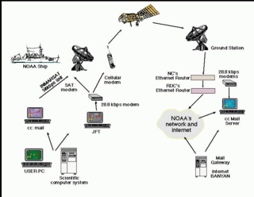

La World Wide Web es un medio global de información cuyos usuarios pueden leer y escribir a través de
computadoras conectadas a Internet. El término es a menudo usado erróneamente como un sinónimo para la
Internet misma, pero la Web es un servicio que opera sobre la Internet, como también lo hace el correo
electrónico. La historia de Internet data de un tiempo significativamente anterior a la historia de la World Wide Web.
En este relato Leinster estuvo décadas por delante de su tiempo al imaginar Internet.

La propuesta original de la Web fue redactada en la CERN en el año de 1989 por Sir Timothy John Berners-Lee,
tomando como idea precursora a un proyecto jamás materializado llamado Memex. La propuesta formal
de la Web fue presentada oficialmente en la CERN el 12 de Noviembre de 1990 en parte gracias a la
colaboración de Robert Cailliau. Como miembro de la CERN, fue quien decidió tomar la idea de Berners-Lee y ayudó tanto en
la redacción como en la provisión de recursos para concretar el proyecto. Sin embargo, no fue hasta abril
de 1993 cuando la CERN decidió permitir el uso libre y gratuito de la Web a la comunidad.
